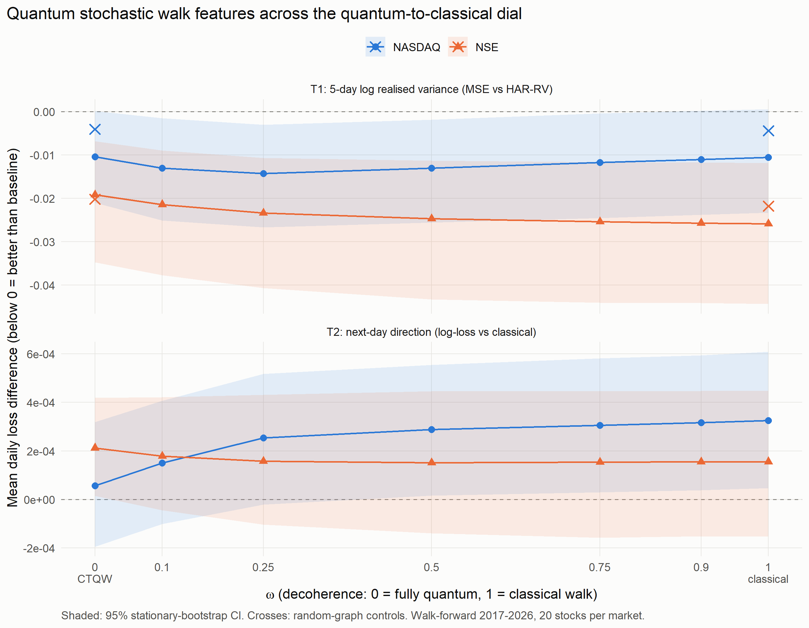
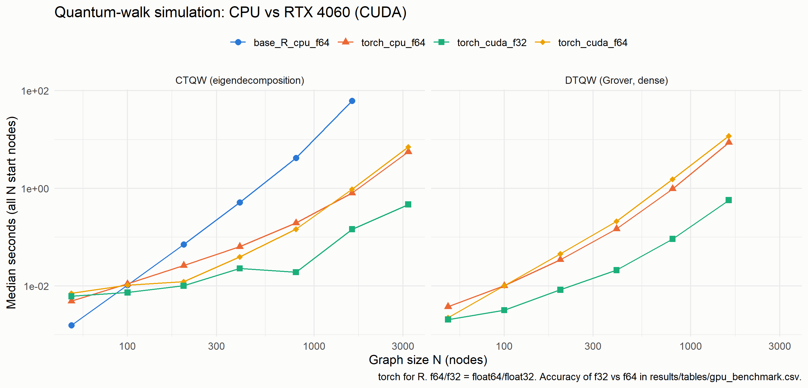

A Big Data framework for financial forecasting with classically simulated quantum walks on market-state graphs — end-to-end project brief: architecture, technology stack, code and usage of every element
https://q-stock-api.onrender.com (interactive docs at /__docs__/)
Markets
20 NSE (India) + 20 NASDAQ (US) large caps, daily data 2015-01-01 → 2026-10-21, plus live 1-minute data
Document date
27 October 2026
Scope statement
All quantum walks are classical simulations (dense/sparse linear algebra on CPU; CUDA only for a benchmark). No quantum hardware is used and no quantum speed-up is claimed. Synthetic data only validates software.
Contents
1
Executive summary
2
End-to-end system flow
3
Technology stack and what each element is used for
4
Repository layout
5
Research method: graphs, quantum walks, features, evaluation
6
Code reference — R library (R/)
7
Code reference — pipeline scripts (scripts/)
8
Big Data layer — HDFS, MapReduce, Hive, Spark
9
Storage — files, DuckDB, Parquet, SQLite
10
Serving — R API, Shiny dashboard, React web UI, chart workspace
11
Testing and quality
12
Deployment and operations
13
Results (headline numbers)
14
Key engineering decisions, limitations, open items
15
Development timeline and Claude workspace setup
1 · Executive summary
Question. Do quantum walks — run on graphs of how stocks move together — carry information that helps forecast markets, beyond what their classical counterparts and simple baselines already provide?
Approach. Every trading day, Q-Stock builds a correlation network of 20 stocks per market. It runs classical diffusions and quantum walks (DTQW, CTQW and a quantum stochastic walk whose dial ω moves smoothly from fully quantum, ω = 0, to fully classical, ω = 1) on the same graph, turns the walk distributions into per-stock features, and tests them under a leakage-controlled, pre-registered walk-forward protocol with proper statistics.
System. Around this research core sits a complete Big Data and product stack: HDFS + Java MapReduce + Hive on a Cloudera VM, Spark through sparklyr, GPU benchmarks with CUDA, a DuckDB/Parquet live-data store, an R REST API, a Shiny dashboard and a TradingView-style React web app deployed free on Render and Vercel.
No beatNext-day direction: no feature set beats a naive base-rate predictor in either market (log-loss 0.6930 NSE / 0.6921 NASDAQ).
ω ≈ 0.25 winsNASDAQ 5-day volatility: partially coherent QSW beats its classical limit (Holm p = 4.8×10⁻⁶); not on NSE.
GHAR bestA simple classical graph-HAR model is as good or better; QSW features add nothing on top of it.
430×CUDA float32 CTQW at N = 1,600 vs base R (0.145 s vs 62.3 s).
6.6 s → 0.09 sCold chart load after moving live candles to DuckDB and serving charts from the store.
Bottom line. Quantum coherence measurably changes how a walk spreads over the market graph, and on NASDAQ an intermediate level of coherence gives slightly better volatility features than the classical limit of the same walk. But no quantum-walk feature set improves on simple classical baselines. The evaluation had the power to detect weak signals (power analysis), so this is an informative negative result about practical quantum advantage — the project's research contribution is the controlled quantum-to-classical audit itself.
Status (27 Oct 2026)
All planned experiments complete; results in docs/results/, every number traceable to results/tables/*.csv.
Web app and API deployed and verified; checkpoint tag checkpoint-2026-10-25.
Tests: 61 testthat blocks / 357 expectations, 34 API end-to-end checks, Shiny server tests, TypeScript type-check, lint and build — all passing.
Open: observe 5-second bars during market hours; Render memory check; manuscript writing paused until requested.
2 · End-to-end system flow
The project has three faces that share one R computation library (R/): the research pipeline (batch), the Big Data layer (course component) and the serving layer (live product). Every entry point — scripts, tests, Shiny, the API and the Docker image — sources all of R/*.R and the shared configuration QS.
How a piece of data travels
Stage
What happens
Code
1 · Acquire
Yahoo daily OHLCV for 40 tickers is downloaded once and cached; live 1-minute bars are polled every 60 s for viewing only.
For each market and date: 60-day trailing correlations → symmetrised k = 4 nearest-neighbour graph → Laplacian.
R/market_graph.R
4 · Walk
Six processes run on the same graph from every start node, giving a distribution matrix P.
R/dtqw.R, R/ctqw.R, R/qsw.R
5 · Features
Identical node features from every P (return probability, momentum spillover, entropy, volatility spillover) joined with classical features and targets.
R/qsw_features.R, R/dataset.R
6 · Evaluate
Monthly walk-forward with an embargo; models fitted on the past only; DM tests with Holm correction, bootstrap CIs, MCS, power analysis.
R/walk_forward.R, R/evaluation.R
7 · Scale out
Same data stored in HDFS, aggregated by MapReduce, queried in Hive and recomputed in Spark — all cross-checked against R.
hadoop/, hive/, scripts/03–04
8 · Report
Tables (CSV + Markdown) and 300-dpi figures feed the docs and manuscript.
scripts/08, 12; docs/results/
9 · Serve
The API computes live graphs, the quantum dial, forecasts and chart bars; React and Shiny render them; Render and Vercel host them.
api/, app/, web/, deploy/
3 · Technology stack and what each element is used for
Versions are the ones installed on the development laptop (R packages) or pinned in web/package.json / the Dockerfiles.
3.1 Languages and runtimes
Element
Version
Used for
R
4.6.1 (laptop), 4.4.2 (Docker)
All analysis: data, graphs, quantum-walk simulation, models, statistics, API, dashboard. A course rule: no Python/PySpark.
Java
JDK 1.7 (VM), Temurin 17 (host)
The MapReduce job (Hadoop's native language); Java 17 runs local Spark.
HiveQL
Hive 1.1 (CDH 5.13)
External tables, window-function queries and consistency checks.
TypeScript
5.6
The React web UI; types mirror the API contract.
Bash / PowerShell
Git Bash, PS 5.1
Overnight job chains, VM start-up, thermal guard, system monitor, skill packaging.
SQL (DuckDB / SQLite)
DuckDB 1.5.6
Candle upserts, intraday roll-ups, Parquet export and pruning.
3.2 R packages
Package
Version
Used for
Where
base R, stats
4.6.1
Linear algebra (eigen, matrix products), OLS/logit, RK4 integration of the Lindblad equation
R/ throughout
Matrix
1.7.5
Sparse DTQW operators for large graphs (benchmarked to N = 1,600)
Architecture and design documents, pre-registration, novelty audit, results, runbook, issues log, hand-off, CO mapping.
paper/
1 file
Manuscript draft (framed as a pre-registered quantum-to-classical audit).
.claude/, CLAUDE.md
10 skills
Instructions and reusable workflows for Claude sessions.
5 · Research method
5.1 Market-state graph (per market, per trading day t)
Daily log returns; Pearson correlations over the trailing 60 days ending at t (all known at the close of t). A stock joins the graph only if ≥ 80% of the window is observed.
Each stock links to its 4 most-correlated peers; links are symmetrised. Edge weight = max(ρ, 0.01).
Graph Laplacian L = D − W. A random-graph control replaces ρ with random values before the same kNN step, separating "network structure" from "pooling across stocks".
5.2 Walk processes (all on the same graph, started from every node)
Process
Definition
Code
Random walk (rw)
Transition D⁻¹W, averaged over steps 1–10
walk_distributions()
Heat kernel
exp(−τL), averaged over a 10-point τ grid in (0, 2]
walk_distributions()
Personalised PageRank
(1−α)(I − αT)⁻¹, α = 0.85
walk_distributions()
DTQW
Grover-coin discrete-time quantum walk on the arc space of the graph (dense and sparse)
The QSW is integrated with RK4 (step 0.02) for all start states at once as an N×N×N complex array; the dissipator is computed in closed form (diag(W·p) and diag(d)), avoiding N² jump operators. Unit tests verify that ω = 0 reproduces the CTQW and ω = 1 the heat kernel to 10⁻⁶. The pre-registered grid is ω ∈ {0, 0.1, 0.25, 0.5, 0.75, 0.9, 1}.
5.3 Features and targets
Feature
Meaning
self
P[i, i] — how much of the walk returns to the stock (localisation)
mom
Walk-weighted mean of neighbours' z-scored 5-day returns (momentum spillover)
ent
Shannon entropy of P[i, ·] — how widely influence spreads
volspill
Walk-weighted mean of neighbours' log 5-day realised variance (volatility spillover)
Classical
ret_1, ret_5, ret_20, vol_10, vol_20, range, log_vol_z; HAR terms (log RV over 1, 5, 22 days); GHAR adds neighbour averages of the HAR terms
Targets: T1 (primary) log of next-5-day realised variance; T2 next-day direction; T3 cross-sectional rank IC.
5.4 Evaluation protocol
Walk-forward: 24-month rolling training window, one test month per fold (2017-03 → 2026-10). Training rows whose label is revealed inside the test month are dropped (embargo). Scaling and tuning use training data only; nested tuning uses the last 6 months of the training window.
Leakage tests: future rows are perturbed and features asserted unchanged.
Statistics: Diebold–Mariano with Newey–West variance; Holm within pre-registered families, Benjamini–Hochberg for ablations; stationary bootstrap CIs (block 20, 1,000 reps); Model Confidence Set (B = 2,000); exact linear SHAP; power analysis with injected signals.
Pre-registration: hypotheses H1–H4, ω grid, targets and corrections fixed in docs/research/preregistration_v2.md before any v2 run; everything else labelled exploratory.
6 · Code reference — R library (R/)
File
Responsibility
Key functions
Used by
config.R
Dates, the 40-stock universe, graph and walk-forward settings, column groups
QS, CLASSICAL_COLS, GRAPH_METHODS, graph_cols()
everything
data_adapter.R
Yahoo download and parsing; cleaning; CSV cache; Parquet price cache (identical to CSV)
Unattended job chains with === step OK/FAIL markers and explicit exit-status checks
results/overnight_*.log
thermal_guard.ps1, monitor_system.ps1
Pause R/Java and the VM at 87 °C, resume ≤ 65 °C; 5-minute health log
results/thermal_guard.log
fetch_sentiment_overnight.R
Patient GDELT download with per-ticker cache and retries
data/raw/gdelt_cache/
8 · Big Data layer
HDFS (via WebHDFS from R)
R/hadoop_bridge.R talks to the NameNode REST API (http://127.0.0.1:50070/webhdfs/v1) to create folders, upload, list, read and delete files under /user/cloudera/qstock: curated/prices, raw/sentiment, code, results/…. Replication 1, 128 MB blocks.
Fault fixed: Cloudera Manager wrote 127.0.0.1 into the DataNode include list while the DataNode registers as 10.0.2.15 → 0 live DataNodes, NameNode in safe mode. hadoop/vm_start_services.sh re-applies the fix on every boot.
MapReduce (Java)
hadoop/QStockMonthlyStats.java: mapper → combiner → 2 reducers with custom counters, computing per ticker-month statistics on YARN. Compiled and run in the VM over SSH. Validation: 5,680 groups, count difference 0, max error 1.8×10⁻¹⁵ vs an independent R computation.
Hive (HiveServer2 :10000, MySQL metastore)
hive/01_market_tables.hql and 02_results_tables.hql create external tables prices, mr_monthly_stats, sentiment_daily, experiment_results, predictions. 03/04_*.hql run GROUP BY, ROW_NUMBER/RANK window functions, joins, and a MapReduce-vs-raw consistency query (0 mismatches). Run through beeline over SSH.
Spark 3.5 through sparklyr
sparklyr 1.9.6 cannot drive the VM's Spark 1.6 / Java 7, so Spark 3.5.9 runs locally (local[8], Java 17, 8 GB driver memory). scripts/04 computes rolling features with dplyr window functions and a point-in-time sentiment range join in Spark SQL, agrees with R to 10⁻¹⁵ (features) and 6.5×10⁻⁷ (sentiment decay), and scales to 7.49 M rows in 4.8 s.
The start-up script fixes the include list, starts ZooKeeper and Hive through the Cloudera Manager REST API, and restarts HiveServer2 if it came up before the metastore. The Cloudera Management Service is kept stopped (with it running the guest hung). Thread budget on the 20-thread host: ranger 4, Spark 8, VM 4 vCPU.
Course-outcome coverage (CSE 465)
Course topic
Evidence in Q-Stock
Big Data concepts
Volume (40 tickers × 11.8 years, scaled to 7.5 M rows), variety (prices + news tone), velocity (60 s live feed, 5 s bars)
CSV + Markdown in results/tables/; PNG figures; prediction dumps (git-ignored)
scripts 05–23
Live 1-minute candles (hot week)
DuckDB data/live/candles.duckdb (API) and candles_app.duckdb (Shiny) — one writer process per file
/api/live, Shiny poll
Live candle history
Hive-partitioned Parquet data/live/parquet/interval_sec=60/day=YYYY-MM-DD/, read with partition pruning
duck_export_parquet(), script 29
5-second bars
Same DuckDB table with interval_sec = 5, source yahoo_snapshot
snapshot_tick()
Rollback store
SQLite data/live/candles.sqlite (untouched by the migration)
options(qstock.store_backend = "sqlite")
Static snapshot
211 JSON files (12.3 MB) in web/public/data/
script 25
Candle table (same DDL on DuckDB and SQLite; PostgreSQL-compatible)
CREATE TABLE candles (ticker TEXT, interval_sec INTEGER, bucket_start BIGINT,
open, high, low, close DOUBLE PRECISION, volume DOUBLE PRECISION, source TEXT, updated_at BIGINT,
PRIMARY KEY (ticker, interval_sec, bucket_start),
CHECK (high >= low AND high >= open AND high >= close AND low <= open AND low <= close));
-- writes: INSERT … SELECT FROM registered frame ON CONFLICT (…) DO UPDATE (idempotent, bulk)
Measured storage engines (storage_benchmark.csv, median of 20)
Query
SQLite
DuckDB
Parquet
One ticker, latest session (391 rows)
0.62 ms
1.23 ms
5.6 ms
One ticker, 5 sessions
1.97 ms
1.36 ms
6.2 ms
One market, latest session (7,236 rows)
7.28 ms
3.15 ms
8.0 ms
Daily roll-up of 1-min candles
83 ms
6.3–13 ms
8.7–14 ms
Daily prices load (117,660 rows)
CSV 367–950 ms
25–30 ms
Honest reading: for a single-session chart both engines are sub-millisecond-scale. The user-visible win (cold chart 6.6 s → 0.04–0.09 s) came from serving charts from the store instead of waiting for a Yahoo fetch; DuckDB pulls ahead as queries grow (multi-session, whole market, aggregates).
10 · Serving — R API, Shiny dashboard, React web UI
10.1 REST API (api/plumber.R, run with Rscript api/run_api.R [port])
All endpoints are read-only GET, return JSON, carry a Server-Timing header and allow any origin (CORS). Bad input returns 400. The API also serves the built web UI from web/dist.
Endpoint
Returns
Caching / source
/api/status
Both markets: open flag, local time, time zone, tickers
—
/api/live/<market>
Quotes, change, intraday RV, sparklines, store statistics, stale flag
One shared Yahoo batch per minute
/api/candles/<m>/<ticker>?days=
1-min OHLCV + VWAP (reset per session), exchange-local time
DuckDB store + forming bar
/api/bars/<m>/<ticker>?interval&range&ind
Bars for 5s, 1m, 5m, 15m, 30m, 1h, 1D, 1W, 1M and ranges 1D…ALL, plus indicator lines (VWAP, SMA, EMA, BB, RSI)
Store, DuckDB roll-ups, daily history, 5 s snapshot aggregator
/api/graph/<m>?omega&look
Live correlation graph of 1-min returns with QSW features and the P matrix
Per live batch
/api/dial?market&date&omega
Historical daily graph at ω plus the quantum (ω=0) and classical (ω=1) limits
Precomputed for latest date
/api/forecast/<m>
Graph-HAR 5-day volatility forecast per stock
30 min
/api/results
Research tables read from results/tables (nothing recomputed)
—
/api/bench
Speed check of the host (20-node QSW)
—
10.2 Shiny dashboard (app/app.R, port 8050)
bslib navbar with seven tabs — Overview, Live market (plotly candlesticks + visNetwork live graph + risk table), Quantum dial (live Lindblad integration on a chosen day), Volatility forecasts, Results (pre-registered tests, GHAR + MCS, robustness, power, direction, figures), Big Data pipeline, System health. ?tab= deep links; screenshots with scripts/22.
10.3 React web UI (web/src/)
Element
Usage
pages/LivePage.tsx
Market switch, KPI cards, 3D quantum market graph with ω slider, selected-stock panel, chart workspace, live risk table
pages/DialPage.tsx
Historical quantum dial: sweep ω between quantum and classical distributions for any date
pages/ResearchPage.tsx
Every headline result from /api/results as charts and tables
pages/PipelinePage.tsx
The Big Data pipeline and its validation numbers
components/QuantumGraph3D.tsx
react-three-fiber scene: nodes sized by volatility, glow by spillover, particles flowing in proportion to walk transition probabilities
lib/api.ts
Typed client and TanStack Query hooks; live/snapshot/fallback logic (load(live, snap))
App.tsx
Routing, theme, recovery from stale chunks after a redeploy
Left toolbar: cursor, crosshair, trend line, ray, horizontal line/ray, vertical line, rectangle, Fibonacci, measure, text; magnet, lock, hide, remove all, zoom; undo/redo; drawings saved per stock in the browser
Indicator values are computed in R (project rule: the UI only renders), and were cross-checked by hand on real data: daily SMA 20 = 1,192.59, Bollinger upper = 1,231.68, 1-min VWAP = 1,180.66, RSI 14 = 77.23 (RELIANCE.NS).
11 · Testing and quality
Suite
Run with
What it proves
Quantum core
test_dtqw/ctqw/qsw.R
Unitarity, Hermiticity, probability conservation, QSW limits vs closed forms (10⁻⁶), sparse = dense
Pipeline
test_stage2/baseline/v2.R
Leakage (perturb future → features unchanged), embargo, holiday cleaning, NA-safe windows, metrics
Sessions, idempotent upsert, rejected bars, tick aggregator ordering and late ticks, DuckDB = SQLite, Parquet round-trip identical, no duplicate export
Bars and indicators
test_bars.R, test_indicators.R
Known-value SMA/EMA/BB/RSI/VWAP, spec validation, roll-up DuckDB = base R across the US DST change, 5 s aggregator with mocked snapshots
All unit tests
Rscript tests/run_tests.R
61 blocks / 357 expectations, 0 failed
API end-to-end
Rscript tests/test_api.R
34 checks with a mocked feed: every endpoint, errors, caching, cold store, static serving
Dashboard
Rscript tests/test_app.R
Shiny server logic with mocked fetchers
Web
npx tsc -b, npm run lint, npm run build
Types match the API contract; 0 lint errors; production build
Big Data
in-script cross-checks
MapReduce vs R (1.8×10⁻¹⁵), Hive consistency (0 mismatches), Spark vs R (10⁻¹⁵)
Research integrity
doc-vs-CSV audits
Every number in docs, README and manuscript traced to its CSV; corrections logged in the hand-off
12 · Deployment and operations
12.1 Deployment topology
Part
How it is built and run
R API on Render
render.yaml → deploy/render/Dockerfile (rocker/r-ver 4.4.2; plumber, RSQLite, DBI, curl, jsonlite, Matrix; duckdb 1.5.6 pinned from a dated binary snapshot with a version check). Copies only R/, api/, results/tables; prices download at build. OPENBLAS_NUM_THREADS=1; no HTTP health check. Auto-deploys on push to main.
Web UI on Vercel
web/vercel.json → npm run build:vercel (live build against VITE_API_URL from web/.env.production), output dist-vercel; assets cached 1 year, data 5 min.
Fallback
While the free API sleeps or fails, the UI loads the bundled snapshot (/data/*.json), shows a notice, and switches back to live data automatically.
12.2 Measured on the deployed services (25 Oct 2026)
Request
Time
Chart bars from the browser (1m, 1D)
0.64 s
/api/bars daily 1Y with SMA, Bollinger, RSI
2.4 s
First 1m/5m request after a restart (one Yahoo fetch into an empty store)
Incident log: the first deploy of the chart workspace crashed at start-up because the image installed duckdb 1.2.0, which rejects the shared_home argument used locally with 1.5.6. Fixed by a version-portable driver (duck_drv()) and pinning duckdb 1.5.6 in the Dockerfiles; the public site stayed usable via the snapshot fallback meanwhile.
12.3 Everyday commands
# R is not on PATH: & "C:\Program Files\R\R-4.6.1\bin\x64\Rscript.exe"
Rscript tests/run_tests.R # unit tests
Rscript tests/test_api.R # API end-to-end (offline)
cd web && VITE_API_URL= npm run build # UI for the local API (plain build targets Render)
Rscript api/run_api.R # API + UI on http://127.0.0.1:8000
Rscript -e "shiny::runApp('app', port = 8050)" # Shiny dashboard
Rscript scripts/25_export_snapshot.R # refresh the static snapshot
bash scripts/overnight_v2.sh # unattended research re-run
Long runs write === step OK/FAIL markers and check every R exit status; the thermal guard (scripts/thermal_guard.ps1 -Hours 14) pauses work at 87 °C.
13 · Results (headline numbers)
Source: docs/results/results.md and results_v2.md; every value comes from results/tables/*.csv.
Supported: ω = 0.25, Δ = −0.0037, 95% CI [−0.0052, −0.0019], Holm p = 4.8×10⁻⁶; ω = 0.5 Holm p = 4.7×10⁻⁸; holds under QLIKE, both halves of the sample, 17/20 stocks
H3: random-graph control reproduces the gain?
Yes (pooling effect)
No (p = 0.29)
Best achievable forecast (nested tuning)
Combination, OOS R² 0.178
Linear GHAR, OOS R² 0.348
QSW features on top of GHAR
No gain
No gain (worse under QLIKE, p = 0.004)
LightGBM vs GHAR
Worse (R² 0.144)
Worse (R² 0.329, p = 8.6×10⁻⁹)
GPU MLP (QLIKE-trained) vs GHAR on QLIKE
Worse (Holm p = 0.001)
Tie (p = 0.78)
Economic value (inverse-volatility portfolio)
Sharpe changes ≤ 0.001 between ω = 0.25 and ω = 1 — no material benefit
Power analysis
Detects corr ≈ 0.05
Detects corr ≈ 0.035 (0% false positives)
RQ5 sentiment
Not evaluated: GDELT stopped at 21/40 tickers (HTTP 429); partial data not used by design

Figure 7 · The quantumness dial: loss difference vs ω (scripts/12).

Figure 8 · GPU vs CPU walk simulation time (scripts/13).
GPU benchmark (N nodes)
base R f64
torch CPU f64
CUDA f32
CTQW, N = 1,600
62.3 s
0.804 s
0.145 s
CTQW, N = 3,200
—
5.62 s
0.466 s
DTQW, N = 1,600
—
8.68 s
0.572 s
CUDA float64 is not faster than the CPU on this consumer GPU; below ~200 nodes the GPU has no advantage, so the study's 20-node graphs ran on CPU.
14 · Key engineering decisions, limitations, open items
Decision
Reason
One walk family with a quantumness dial (QSW, ω)
Isolates coherence on an identical graph — v1 compared different feature families and could not.
Pre-register v2 before running it
Prevents tuning for significance; exploratory work is labelled.
Spark 3.5 locally via sparklyr
sparklyr has no backend for the VM's Spark 1.6 / Java 7.
Java MapReduce, R everywhere else
Course rule (R only, no PySpark); Java is Hadoop's native language.
R reaches the VM via WebHDFS + SSH/beeline
The CentOS 6.7 guest has no R; keeps the lab VM stock.
Live market built in R (curl multi + DuckDB)
R-only rule, no paid tick feed, memory headroom next to the 8 GB VM.
Computation only in R; UI only renders
One source of truth for the maths; indicators, roll-ups and walks are tested once.
Static snapshot + live fallback
Vercel cannot run R; the free API sleeps; the site must never be blank.
Render with one BLAS thread, no health check, precomputed dial
Measured: thread contention made a 20-node QSW 39 s (2.0 s single-threaded); the health check killed long requests.
DuckDB + Parquet for live candles; Parquet price cache
Charts served from the store (6.6 s → 0.09 s cold), faster multi-session/aggregate queries, 31× faster price loads.
Snapshot-built 5 s bars, labelled as such
Yahoo has no sub-minute data and no free tick feed; honest labelling instead of fabricated ticks.
Drop RQ5 rather than use partial GDELT data
Pre-stated precondition; partial data would bias the comparison.
Limitations
Survivorship bias (today's large caps); Yahoo is unofficial and back-adjusted; one pre-registered graph construction; small effect sizes.
Economic value tested only with an inverse-volatility portfolio; sentiment (RQ5) not evaluated.
Live tab: exchange holidays not modelled; tick aggregator validated on synthetic/replayed ticks; 5 s bars build only while watched during market hours.
Chart: lightweight-charts 4 has no separate panes (RSI/volume are bands); intraday history limited to what the store holds.
Official CSE 465 CO statements still to be inserted; the novelty audit is preliminary (no systematic Scopus/IEEE search yet).
Open items
Observe 5-second bars during NSE hours (09:15–15:30 IST).
Check Render memory under DuckDB (dashboard → Metrics).
Live market tab: R live pipeline, hot/cold candle store, tick aggregator, live QSW graph
8add13b
React + three.js web UI on an R plumber API; final GPU MLP results; RQ5 closed
56dab81
Fix blank Research and Dial charts (recharts animation)
60591a6 → 9f9f3c7
Live deployment: Hugging Face bundle, Render Docker service, free-tier fixes (restarts, BLAS threads), Vercel live mode with snapshot fallback, stale-page recovery
0656737
Claude session setup, 8 project skills, architecture and design documents, docs reorganised
4099957
Live candle store on DuckDB + Parquet; charts read the store; Parquet price cache
3788ebd
TradingView-style chart workspace: /api/bars, R indicators, drawing tools
36871df
Render start-up fix for the image's older duckdb
b411144
Checkpoint 2026-10-25 (tag checkpoint-2026-10-25)
ba25e23
Cowork setup refresh: storage and chart skills, docs brought up to date
Claude Code / Cowork setup
CLAUDE.md at the root gives every session the ground rules (R only, classical simulation only, faithful reporting, the 87 °C rule), the environment, commands and conventions. .claude/skills/ holds ten reusable workflows; scripts/28_package_skills.ps1 zips them for upload, and docs/operations/COWORK_SETUP.md describes the steps.
Skill
Covers
quantum-walk-simulation
DTQW/CTQW/QSW in R, features, physics invariants, GPU limits
Further reading in the repository: docs/architecture/ARCHITECTURE.md, docs/design/DESIGN.md, DUCKDB_MIGRATION.md, CHART_WORKSPACE.md, docs/operations/runbook.md, docs/results/results.md, paper/manuscript_draft.md.